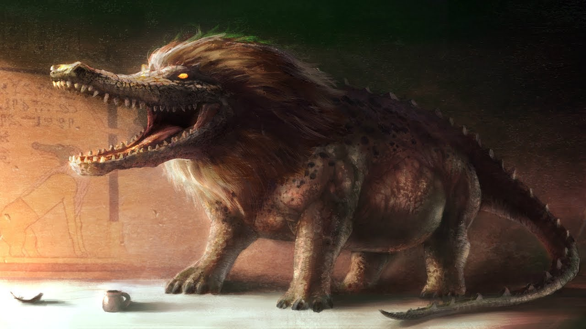
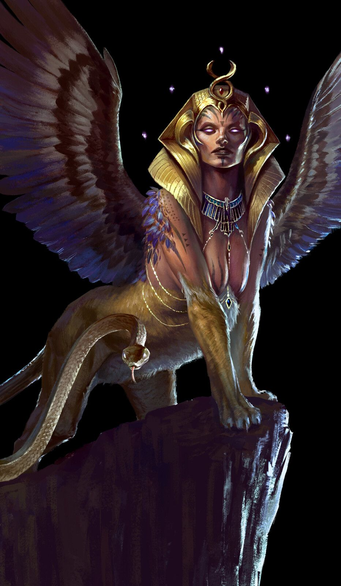
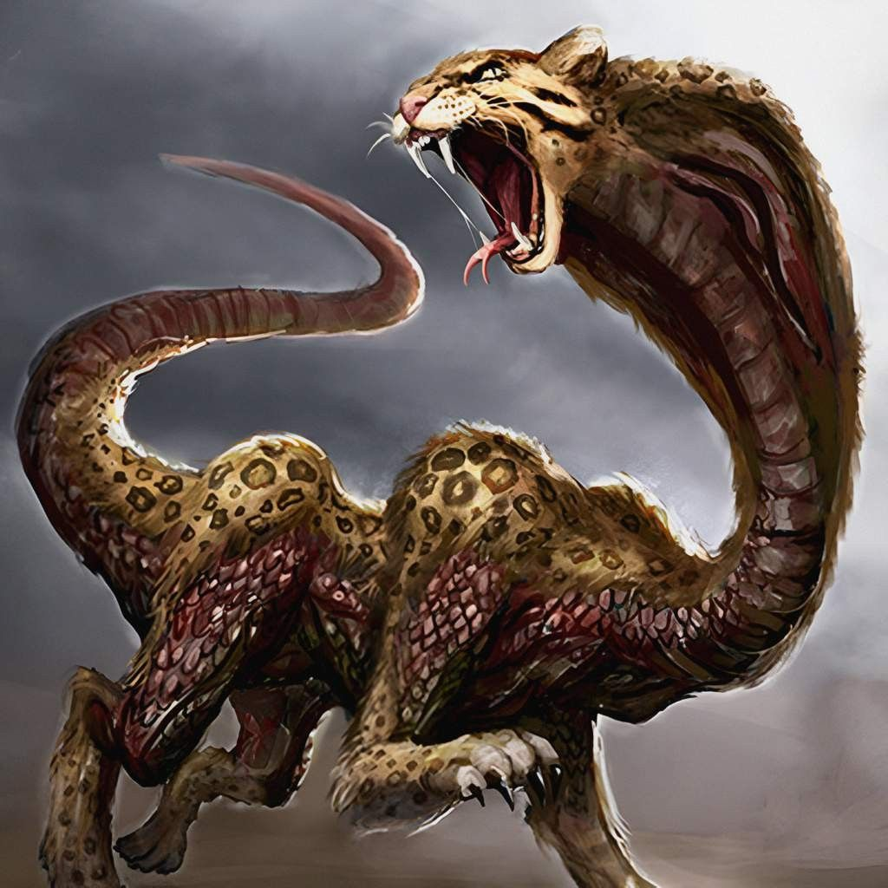

The World of Mythology
Ammit
Ammit was the Egyptian idea of the punishment of the soul. The name means "devourer" or "soul-eater." Ammit was usually known as 'The Devourer of the Dead' or the 'Eater of Hearts'. Ammit was believed to eat any souls found to have sinned. They would then be digested for eternity in acid. Or, Ammit, who was believed to be the guardian of a lake of fire, would place the soul into the liquid fire for all eternity. Ammit appears as mix of the crocodile, lion, and hippo. Rather than being worshipped, Ammit was feared. She was not viewed as a god, but she was viewed as a good force because she destroyed evil. Although Ammit is seen as a devouring entity, she is neutral and strictly serves at the whim of the other deities to take souls that have sinned against the gods and send them into oblivion. She was known as the crocodile goddess also known as Estriedia. Ammit was believed to be Anubis's equal but She wanted to enter the real world and devour the souls of the living.
Sphinx
The sphinx is a fascinating figure from ancient mythology, particularly associated with Egyptian and Greek cultures. In Egyptian mythology, the sphinx is often depicted as a creature with a lion's body and a human head. It symbolizes strength and wisdom and is commonly seen guarding important sites, such as temples and tombs. In Greek mythology, the most famous sphinx is the one that posed riddles to travelers on the road to Thebes. With the body of a lion and the head of a woman, this creature was known for her treachery. She would ask passersby a riddle, and those who failed to answer correctly would meet a tragic fate. The riddle famously posed by the sphinx was: "What walks on four legs in the morning, two legs at noon, and three legs in the evening?" Oedipus famously solved the riddle, answering "man," and thus defeated the sphinx, leading to her demise. The sphinx embodies themes of knowledge, mystery, and the challenges of life, making it a powerful symbol in various mythologies.
Apophis

Apophis, also known as Apep in ancient Egyptian mythology, is a formidable serpent or snake-like creature representing chaos and destruction. He is often perceived as the embodiment of darkness and evil, opposing the sun god Ra and his journey through the underworld each night. Apophis is associated with storms and the dangers that lurk in the night, symbolizing the forces that threaten the order of the universe. According to mythology, each night, as Ra travels through the underworld, he confronts Apophis in a struggle to ensure the sun rises again the next day. This cosmic battle represents the eternal struggle between order (ma'at) and chaos (isfet). In various texts, priests and worshippers performed rituals to ward off Apophis, invoking protective spells and offerings to ensure the triumph of light and order over darkness and chaos. Apophis serves as a reminder of the fragility of harmony in the world and the constant need to confront and overcome destruction. His figure remains a significant part of ancient Egyptian storytelling and religious practice.
The serpopard is a mythical creature from ancient Egyptian art that combines features of both a leopard and a serpent. This unique hybrid is often depicted with the body of a leopard and a long, elongated neck resembling that of a serpent or a giraffe, with its head typically featuring the characteristics of a feline. In ancient Egyptian iconography, serpopards are commonly shown in pairs and are believed to symbolize strength and protection. They often appear in hierarchical art, such as on the walls of temples or in objects like pottery and jewelry, where they may be depicted in scenes of combat or in the company of pharaohs. Their presence is thought to convey a message of dominance over chaos, serving as guardians against would-be enemies. The serpopard's significance extends beyond mere decoration; it reflects the ancient Egyptians' fascination with combining different aspects of nature to convey complex ideas about power, fertility, and the divine. This fascinating creature illustrates the rich symbolism present in ancient Egyptian mythology and art.